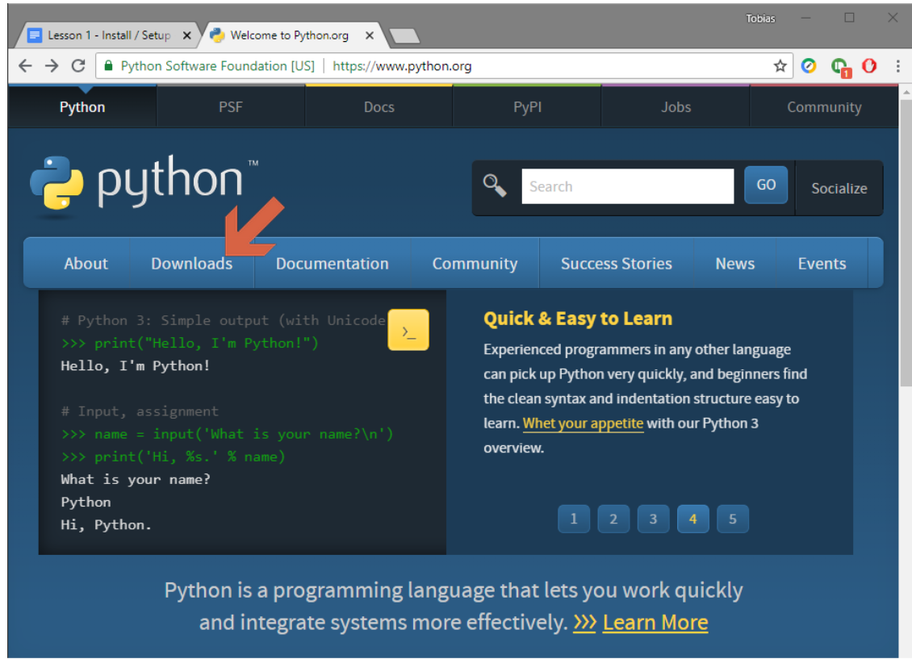
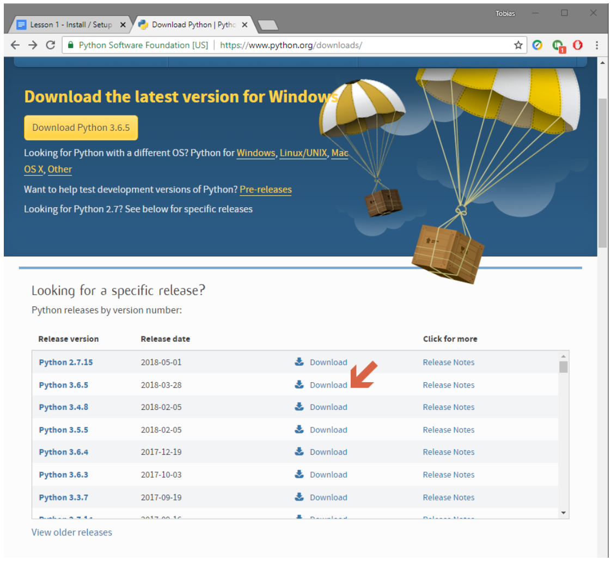
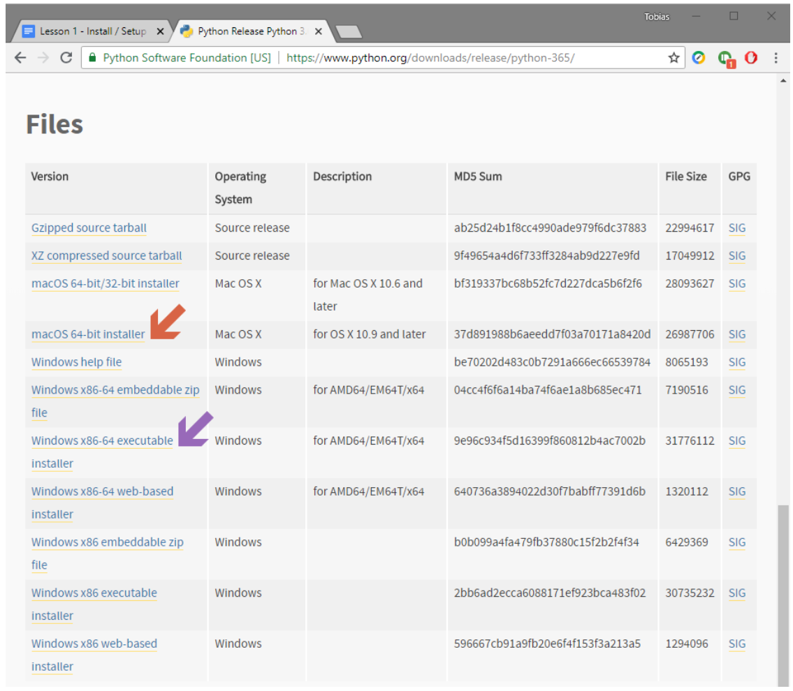
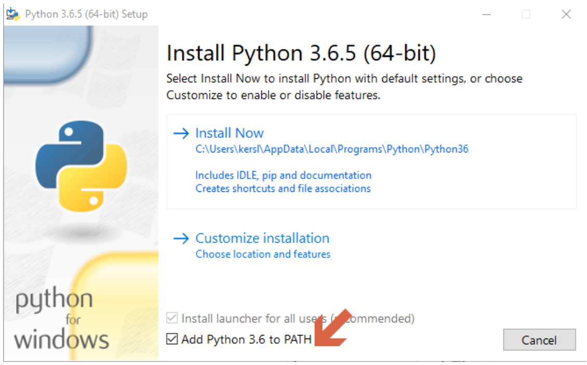
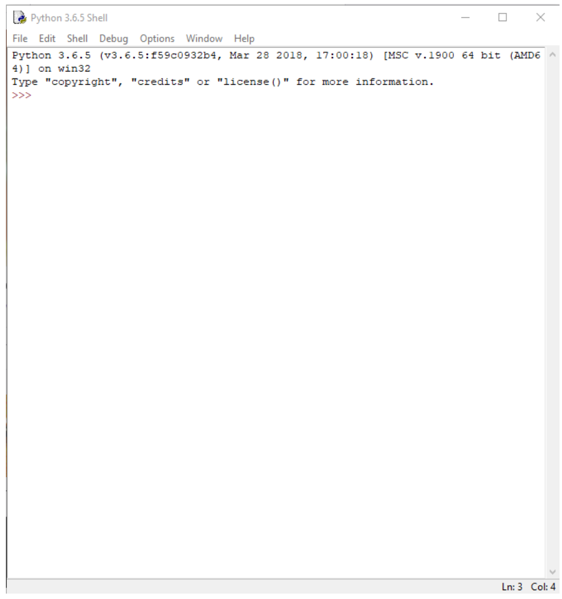
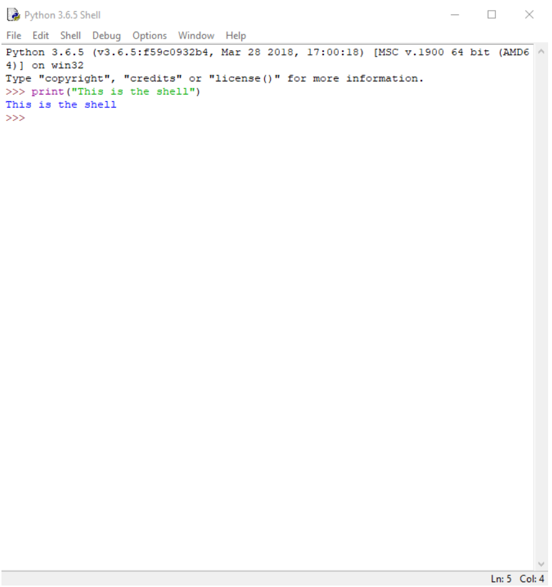

Previous
Next
Introduction and Setup
Introduction
Hi and welcome to my python tutorial. This tutorial will guide you through how to start and master python from the ground up assuming you have no prior programming knowledge. This first tutorial guides you through the installation and first steps of python and the next tutorials will begin to demonstrate how to use python and build your programming knowledge.
Installation
Go to https://www.python.org/ and navigate to the downloads page.

Scroll down and find the download link for the latest version of python version 3 (Python 3.6.5 at
the time of writing) and click the link that says download to open the next page.

Scroll down and find the appropriate installer for your operating system. This will likely be
“Windows x86-64 executable installer” if you’re using windows or “macOS 64-bit installer” if
you’re using a mac, but be sure to check if you’re unsure. Click the link and the download
should start automatically.
The reason we are using python 3 over python 2 is that python 2, although still updated,
is considered a legacy language and isn’t gaining new features like python 3 and although
the languages are quite similar some syntax differs. The main argument for why a lot of people
still use python 2 is library support but this is getting less relevant day by day. Most
importantly after learning python 3 python 2 will be incredibly easy to pick up in the future
if you ever need to use it.

Now run the installer and follow the instructions.
Windows Installation

When installing Python make sure to tick the box that says “Add Python to Path” as this will be
useful in the future. Although this can be done later on it can be difficult and confusing if you
aren’t familiar with the PATH environment variable in windows. Hit Install Now or do a custom
installation if you want to change your install location, but make sure not to uncheck any components
like PIP or IDLE. When the installation is complete hit close. If provided with the option select the
option to extend your path max length. Although this is unessential it may benefit you later.
Running Shell For The First Time
Congratulations! You have now installed python. Along with python the installation provides useful tools,
the most important of which is a program called IDLE. IDLE is the default ide (integrated development environment)
that is provided with python. An ide is essentially a glorified text editor that provides additional features like
“syntax highlighting” which highlights certain parts of text in different colours to identify their functions as well
as point out possible errors in your code and basic debugging tools. IDLE is a very clutter free beginner oriented ide
as due to its lack of excessive features it isn’t too overwhelming.
Search for a open IDLE and you should be greeted with the shell. The shell will be greater explained in the next tutorial
but it is what is known as an interpreter. This translates your python code into code that can be understand and executed
by your operating system. Essentially it runs your programs. Shell is what is known as an “interactive shell”, which
basically means we can use it as a sort of testing ground or scratch pad for testing certain lines of code.

For example, if we type print (“This is the shell”) and hit enter the shell will output or
“print” the text back at us.

The text inside the quotation marks can then be changed to anything you want. Go ahead and try.
Outroduction
In this tutorial you have successfully downloaded and installed python and executed your first line of code in the shell. Next tutorial we will go more in depth into the operation of IDLE and the shell.